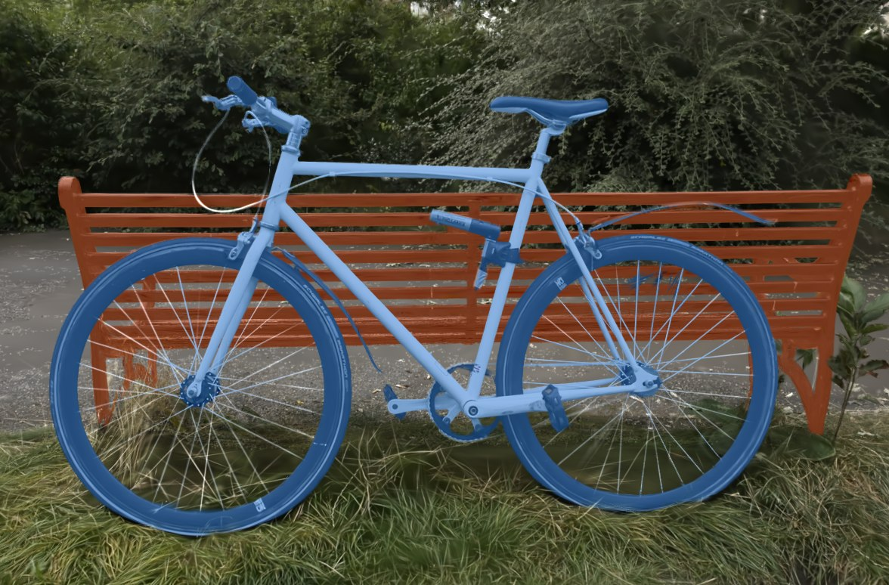
3D Vision · Segmentation
3D Gaussian Splatting 장면은 사진처럼 보여도 어디까지가 한 물체인지 모릅니다. 사진 속 물체를 3D 에서 깨끗하게 떼어내 옮기고 편집하고 시뮬레이션에 쓸 수 있게 만드는 연구를 하고 있습니다. 2026년 10월부터 진행 중인 미발표 연구라서 방법 설명은 줄이고 결과 사진 위주로 정리했습니다.
장면에서 물체를 꺼내면 조각이 붙어 나오거나 구멍이 난다. 사진별 2D 마스크에 틀린 곳이 섞이면 더 심해진다.
물체 하나만 꺼내도 형태가 온전하고, 다른 물체가 붙어 나오지 않는 3D 장면.
figurines 장면에서 물체 추출 IoU 88.9. 자전거처럼 가는 구조가 많은 장면도 물체별로 나뉜다.
무엇을 하려고 했나
기존 방법으로 나눈 장면에서 물체를 옮기면 경계가 지저분하게 잘리고 자리에 잔해가 남는다. 로봇이 물체를 집거나 시뮬레이터에 넣으려면 이 경계가 깨끗해야 한다.
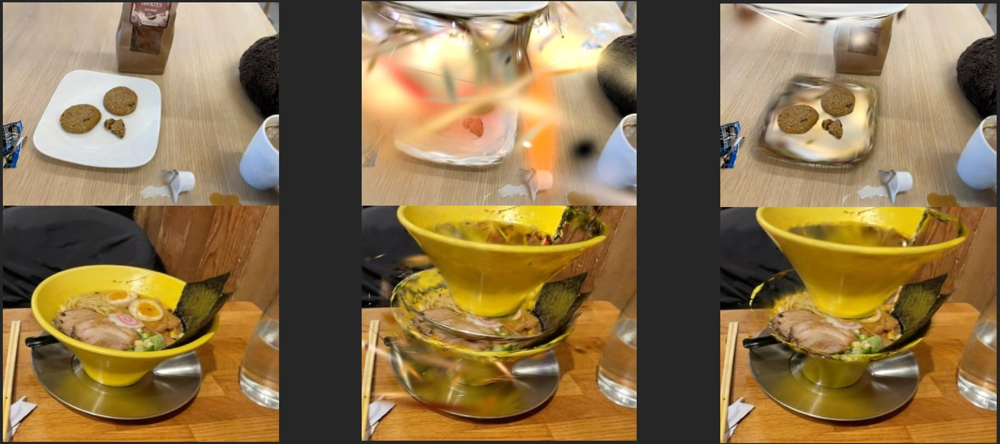
입력으로 쓰는 2D 마스크도 문제다. 물체를 통째로 놓치거나 바퀴 틈까지 칠하는 오류가 있고, 이런 오류는 3D 결과로 그대로 옮겨 간다. 그래서 학습과 라벨 품질을 함께 손봤다.
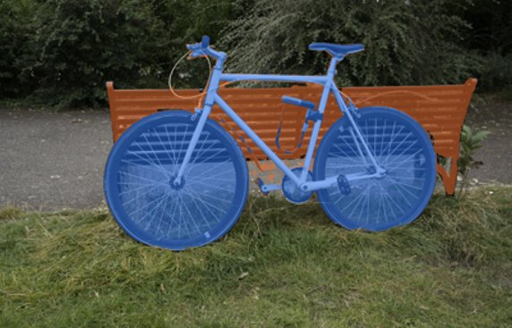
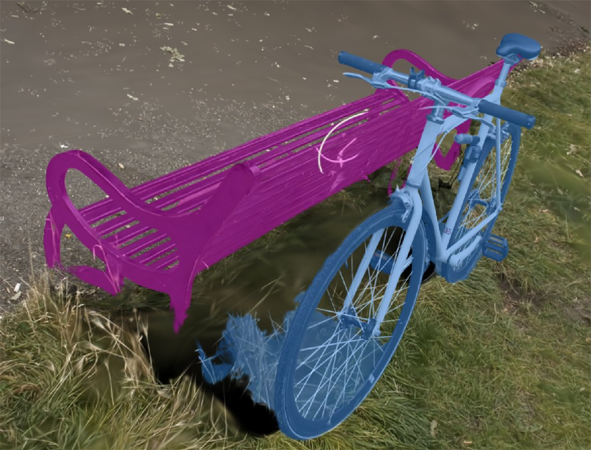
틈까지 칠한 마스크로 만든 결과. 바퀴 안쪽 풀과 벤치 일부가 자전거 소속이 된다.
결과
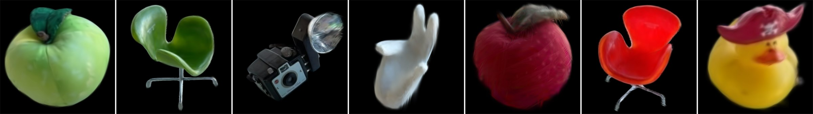
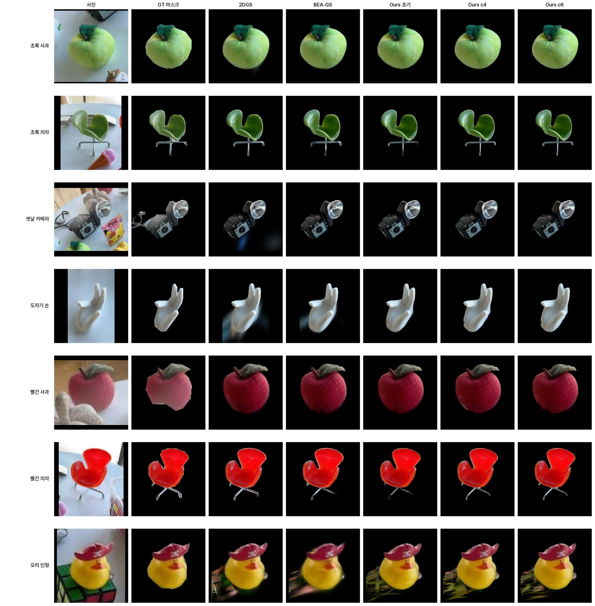
| 방법 | 렌더 IoU | 물체 추출 IoU |
|---|---|---|
| FlashSplat | 85.7 | 80.1 |
| COB-GS | 84.7 | 82.9 |
| BEA-GS (직접 재현) | 87.9 | 81.4 |
| 이번 연구 | 92.7 | 88.9 |
figurines 장면, 테스트 4시점 × 물체 7개 평균, 1회 실행. 입력 마스크가 서로 달라서 방법과 마스크의 효과가 섞여 있다. BEA-GS 는 공개 코드가 없어 직접 재현한 값이며 논문 수치가 아니다. 학습은 그대로 두고 마스크만 바꿨을 때 렌더 88.4 → 92.7, 추출 83.6 → 88.9 였다.
바퀴살과 벤치 살이 겹쳐 있어 가장 나누기 어려운 장면이다. 정답 마스크가 없어 사진으로 확인했다.
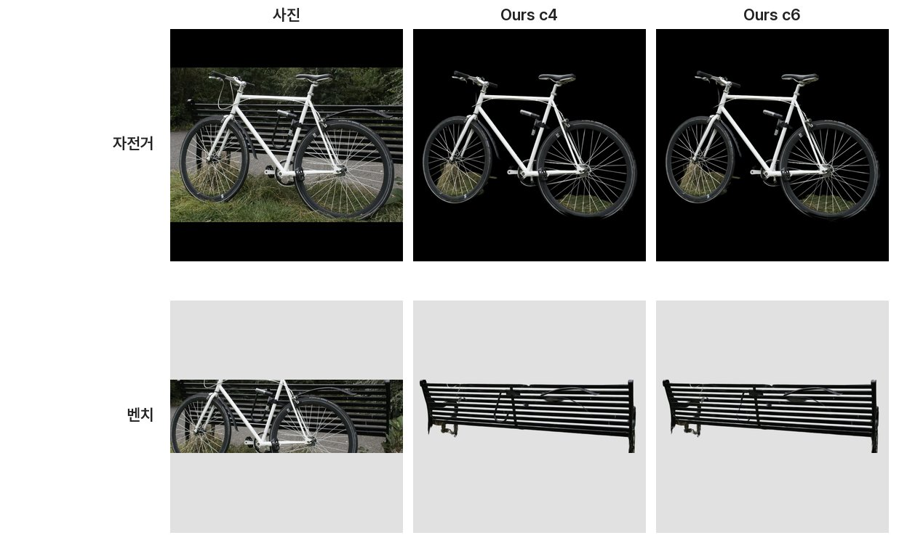
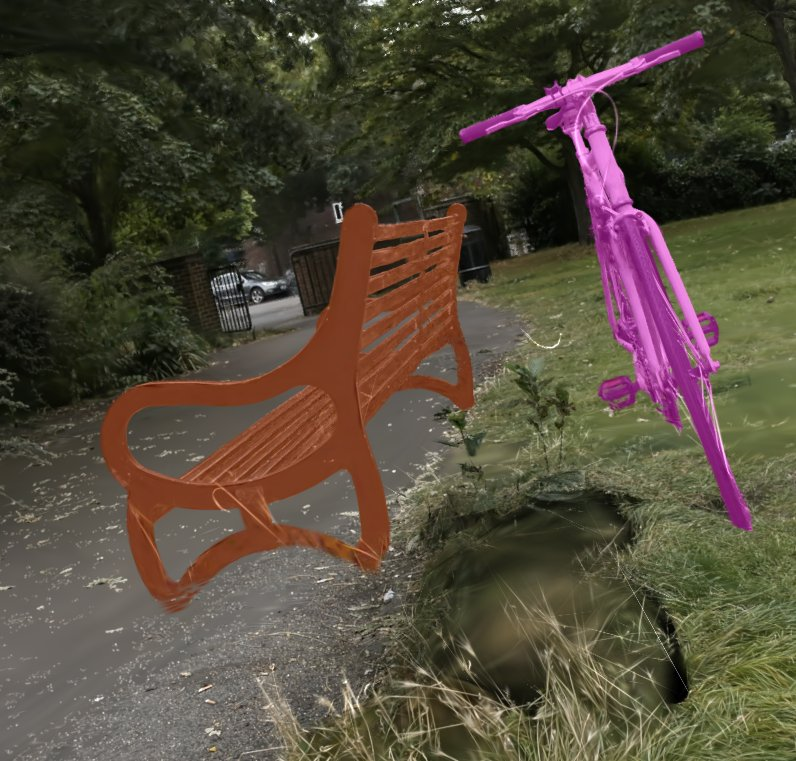
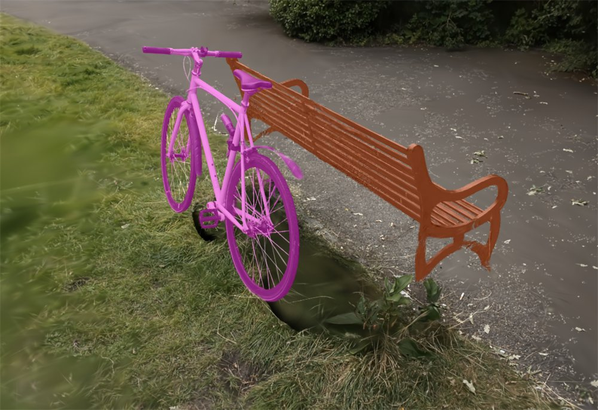
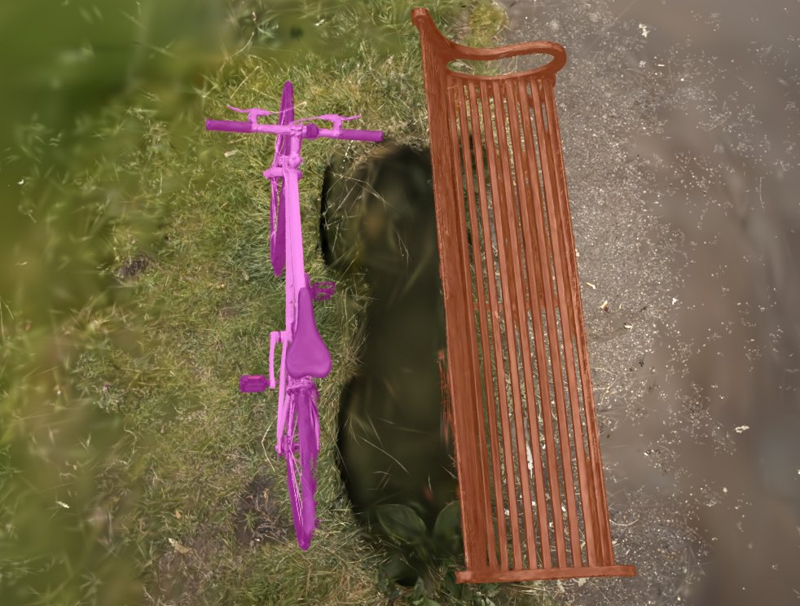
뷰어에서 자전거와 벤치를 따로 옮긴 화면. 어두운 자리는 어떤 사진에도 찍히지 않은 바닥이다.
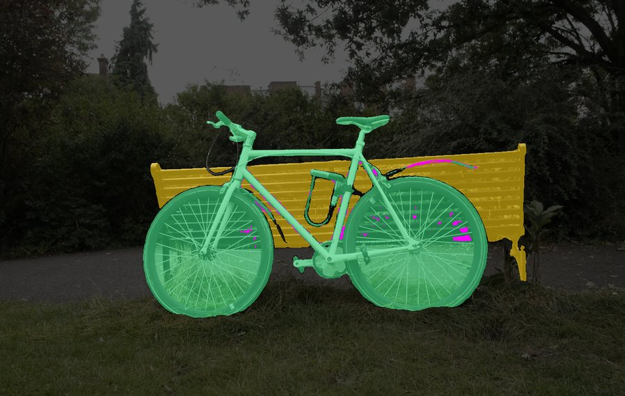
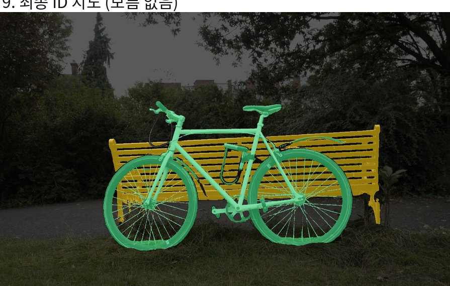
| 필요 역량 | 근거 |
|---|---|
| 데이터로 모델 개선 | 학습은 그대로 두고 마스크 품질만 높여 렌더 IoU +4.3, 추출 IoU +5.3 (figurines, 1회 실행) |
| Auto-labeling | 공개 비전 모델을 조합해, 프레임마다 사람이 고치지 않아도 되는 라벨 생성 · 보정 파이프라인을 구축. 공개 가중치를 그대로 썼고 파인튜닝은 하지 않았다. |
| 학습 · 평가 | PyTorch 학습 코드와 CUDA 렌더러를 수정하고, 공개 방법과 재현 구현을 같은 장면에서 비교 |
| 실적용까지 구현 | 뷰어에 물체 선택 · 이동을 넣어 결과를 3D 로 확인. 앞선 연구에서는 CUDA 솔버(프레임당 5.7 ms)를 Isaac Sim 로봇 상호작용까지 연결 → 다른 포트폴리오 |
| 자율주행과의 접점 | 시점마다 어긋나는 라벨, 가는 구조, 프레임 단위 누락은 주행 영상 auto-labeling 에도 있는 문제다. 다만 주행 데이터에 적용한 경험은 아직 없다. |
다른 포트폴리오
물체 단위로 나뉘어야 물체마다 물성을 주고 시뮬레이터에 넣을 수 있다. 이번 분할 연구는 아래 두 연구의 앞 단계에 해당한다.